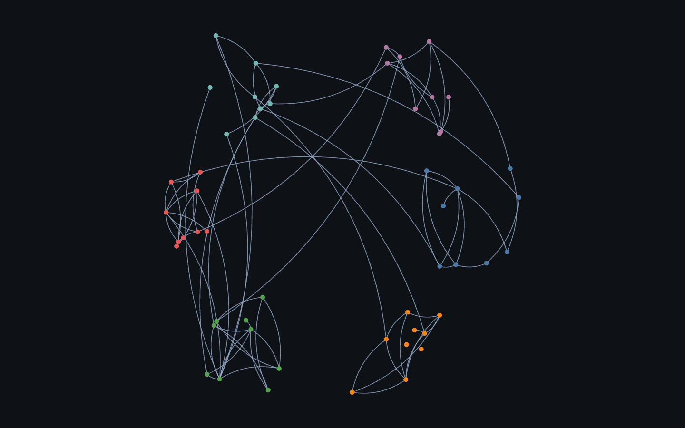
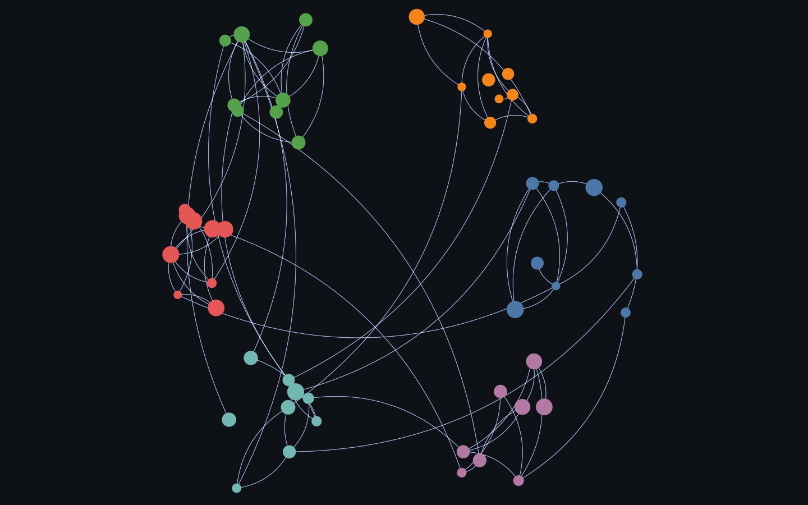
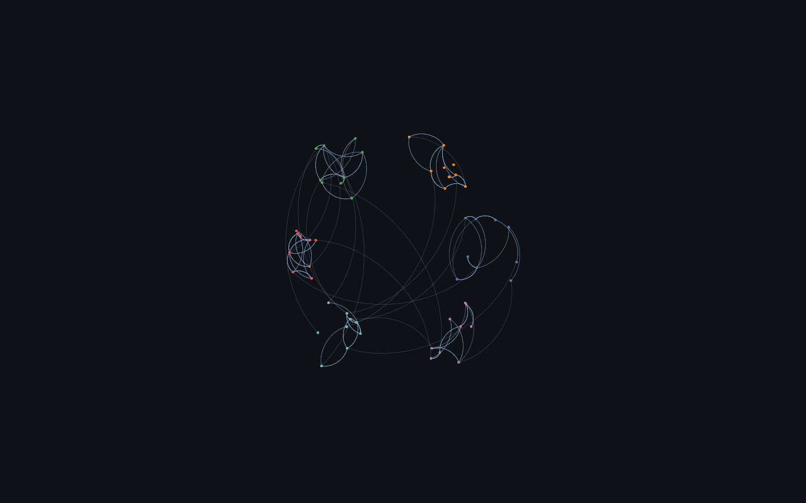
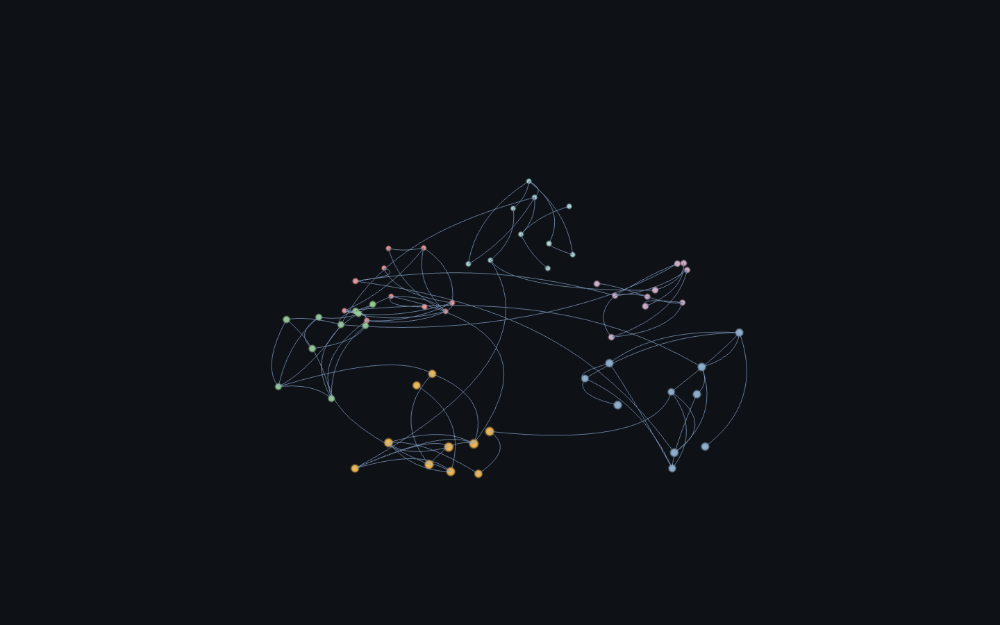

Arced edges to separate parallel or bidirectional links. A Sigma plugin (@sigma/edge-curve); native in cosmos.gl and deck.gl (ArcLayer).

Rendered on the real GPU and gate-verified — it draws, and the pixels change when the camera moves (not a frozen frame). Held 120 fps at 54 nodes / 86 edges.

Rendered on the real GPU and gate-verified — it draws, and the pixels change when the camera moves (not a frozen frame). Held 120 fps at 54 nodes / 86 edges.

Rendered on the real GPU and gate-verified — it draws, and the pixels change when the camera moves (not a frozen frame). Held 120 fps at 54 nodes / 86 edges.

Rendered on the real GPU and gate-verified — it draws, and the pixels change when the camera moves (not a frozen frame). Held 120 fps at 60 points.
| Library | Support | Notes |
|---|---|---|
| deck.gl | ✓ native · verified | PathLayer fed quadratic-bezier paths — native 2D curved links (ArcLayer is the 3D-arc alternative). |
| Sigma.js | ◑ plugin · verified | Curved edge rendering via @sigma/edge-curve (EdgeCurveProgram). |
| cosmos.gl | ✓ native · verified | Curved links via the curvedLinks config (GPU-tessellated). |
| three.js | ◑ workaround · verified | No graph model, but three draws curves — a THREE.QuadraticBezierCurve3 per edge sampled to a Line (TubeGeometry for width). Corrects the earlier survey that wrongly recorded this as not applicable. |
| Helios-Web | — none | Straight edges only (source-audited: no curve / bezier / bundling option in the edge renderer). |